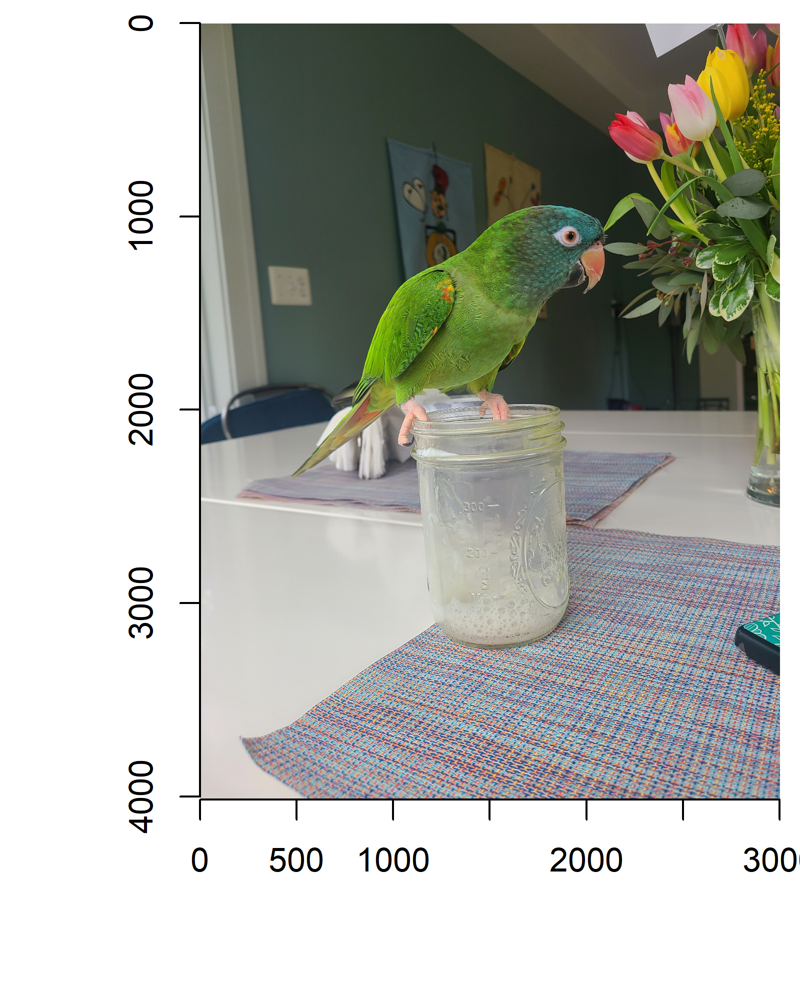
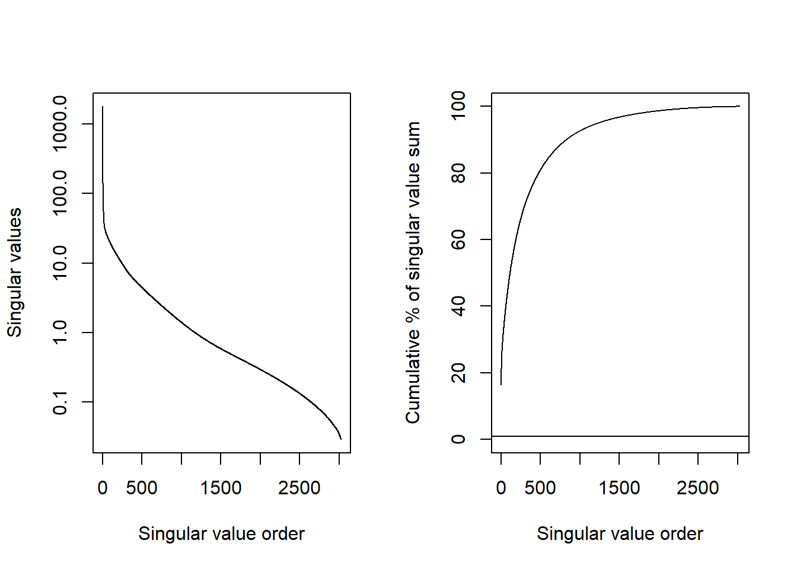
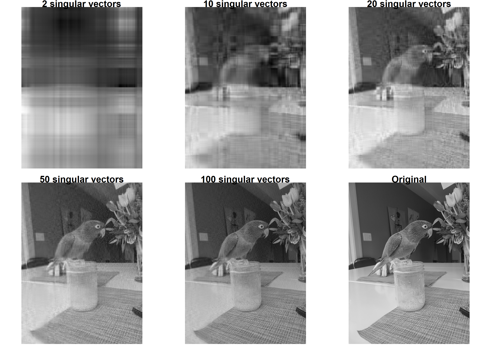
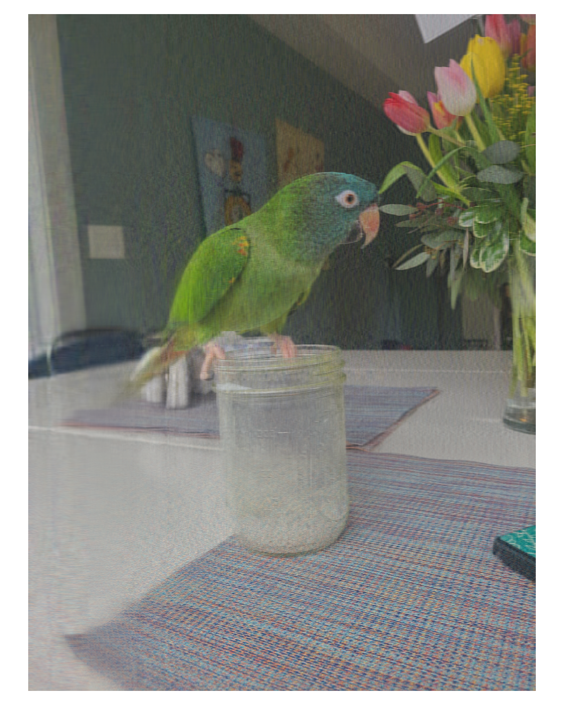
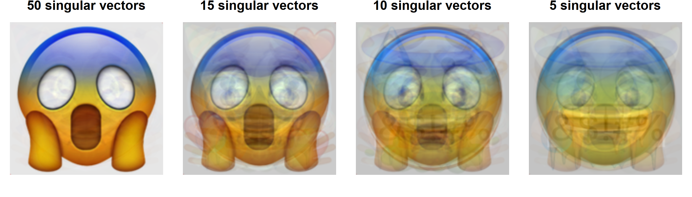
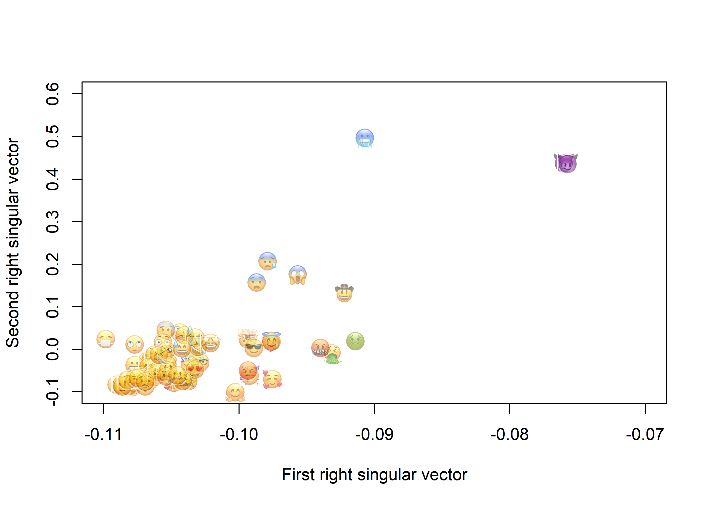
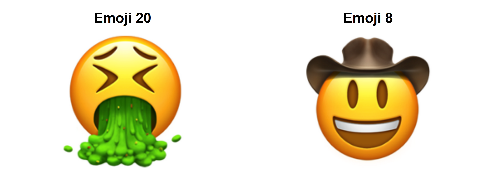
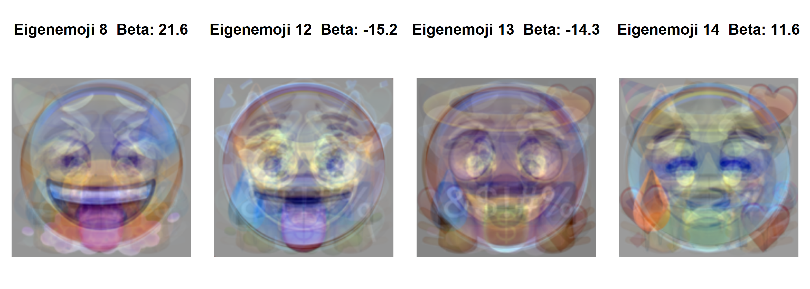

Note to Mac users: You will need to have XQuartz installed if you want to run the code in these notes.
1 Introduction
Singular value decomposition (SVD) is a linear algebra technique for factoring a matrix with wide-ranging applications in data science and machine learning.
With natural numbers (1, 2, 3, …) we can find different ways of factoring them. For example, 24 can be factored as \(1\times 24\), \(2\times 12\), \(3\times 8\), and \(4\times 6\). We can also factor a matrix in multiple ways and some factorizations are more useful than others.
The SVD of a \(m\times n\) matrix \(\mathbf{A}\) is
where \(\mathbf{U}\) is an \(m\times m\) square matrix, \(\Sigma\) is an \(m\times n\) rectangular diagonal matrix (every element is 0 except those on the diagonal starting from the \(\sigma_{11}\) element), and \(\mathbf{V}\) is an \(n\times n\) square matrix. The three matrices, \(\mathbf{U}\) , \(\Sigma\), and \(\mathbf{V}\), are constrained to have special properties. The columns of \(\mathbf{U}\) and \(\mathbf{V}\) have length 1 in the sense that
\[
\sqrt{\sum_{i=1}^m u_{ij}^2}=1 \; \mathrm{and} \; \sqrt{\sum_{i=1}^n v_{ij}^2}=1
\] Also for any column \(i\) and columns \(j\), where \(i\neq j\), the dot product of the two columns is 0, \(\mathbf{u}_i'\mathbf{u}_j=0\) and \(\mathbf{v}_i'\mathbf{v}_j=0\). Together, these two facts mean
Earlier I indicated that \(\mathbf{U}\) should be an \(m\times m\) matrix (\(3\times 3\) in this case), but here R gave us a \(3\times 2\) matrix. This is because the third column would be all 0s. The same goes for \(\Sigma\). You might have expected a \(3\times 3\) matrix here, but the third element would again be 0, so svd() simplifies the results for us. This is often referred to as the “compact SVD”.
The “singular values” are those that run down the diagonal of \(\Sigma\) and are placed in descending order. Notice how the \(\sigma_{11}\) element is much larger than the second singular value in \(\sigma_{22}\). That implies that the first column of \(\mathbf{U}\) and the first column of \(\mathbf{V}\) are the most important.
Note that in (3) the first singular value is 12 times larger than the second singular value. This means that the first columns of \(\mathbf{U}\) and \(\mathbf{V}\) are much more important in reconstructing \(\mathbf{A}\) from the SVD components. In fact, this is what makes the SVD so useful. We can take a matrix and focus on the components associated with just the largest singular values and ignore the rest. What happens if we were to ignore the term associated with the 0.773 singular value? We still get a reasonable approximation to \(\mathbf{A}\).
If you notice, the second column is a multiple of the first column (by a factor of 2.388). By using just the first singular vectors we can compress the information in \(\mathbf{A}\). More precisely, there is no other matrix where one column is a multiple of the other (a matrix of “rank 1”) that matches \(\mathbf{A}\) as closely as this one as measured with the sum of the squared differences between their elements. This is known as the Eckart–Young–Mirsky theorem, (re)discovered in 1936.
This property of the SVD, that it decomposes a large matrix into more compact representations, is what makes the SVD valuable in machine learning. We can take complicated objects like sound, images, video, and documents, convert them into a matrix form, and extract the most important features. Rather than needing to handcode specific features (does the sound hit a particular frequency often? does the text include a particular word?, does the photo have a green dot at a specific spot?), the SVD will tell you what the most important features are and place them in descending order of importance. We can use those features for prediction, classification, and clustering. Recommendation systems (Netflix, Amazon, Goodreads) and classifiers (facial recognition, Shazam) use variations on this idea to make their predictions.
We will work through two image problems. First we will work with a single image to learn what SVD does with it and how well it can compress the image. Then we will work with a collection of face emojis to see if we can classify them into “positive” and “non-positive” groups.
2 SVD of an image
I was once told that, for some reason, students are interested in pets. For that reason, I will use Stewart, our pandemic parrot, a blue-crowned conure, as our example image. The imager package includes functionality for importing, manipulating, and displaying PNG, JPEG, and BMP files (other formats are possible but require other software). I will load a picture of Stewart, rotate it 90 degrees clockwise so Stewart is upright, and display the picture.
stewart <- imager::load.image("data/stewart.jpg") |> imager::imrotate(90)par(mai=c(1,1,0.1,0.1))plot(stewart, ylim=c(4000,0), xlim=c(0,3000))

Figure 1: Stewart the Pandemic Parrot
Make note of the coordinate system. The point (1,1) is in the top left corner of the image.
The stewart image object is a 4-dimensional array.
dim(stewart)
[1] 3024 4032 1 3
It is 3024 pixels wide, 4032 pixels tall, includes only 1 frame (not a video with multiple frames), and 3 color channels (red, green, and blue). We can separate out each of these red, green, and blue layers to see them separately. Mixing the three images shown in Figure 2 will reproduce the original Stewart.
Figure 2: Stewart shown in each of the three color channels
We will work through a color image in a moment, but to simplify let’s start with a grayscale version of Stewart. This will convert the image to a single \(3024\times 4032\) matrix with values ranging from 0 to 1, with 0 indicating black and 1 indicating white.
These are the \(5\times 5\) set of pixels in the upper left corner of the image indicating a mildly dark gray in that region.
Time to throw SVD at this matrix to see if we can approximate this image with some lower rank matrices. Here I am using the fastSVD function from the bootSVD package because… well… it is fast. In addition, it allows the user to not return the full set of singular vectors/values to obtain a smaller result. Here I ask for only the largest 100 singular values.
# limit computation to just 100 singular valuesstewSVD <- bootSVD::fastSVD(stewartGray[,,1,1], nv=100)
Let’s explore what we have in stewSVD by checking the dimensions of \(\mathbf{U}\), \(\Sigma\), and \(\mathbf{V}\).
dim(stewSVD$u)
[1] 3024 3024
length(stewSVD$d)
[1] 3024
dim(stewSVD$v)
[1] 4032 100
So \(\mathbf{U}\) is a \(3024\times3024\) matrix and \(\mathbf{V}\) is a \(4032\times100\) matrix, limited to 100 columns by the nv=100 argument when we ran fastSVD. stewSVD$d stores just the diagonal elements of \(\Sigma\) with R reporting that there are 3024 singular values computed. Let’s explore the singular values graphically.
par(mfrow=c(1,2))options(scipen=1000)plot(stewSVD$d, type="l", log="y", xlab="Singular value order",ylab="Singular values")plot(100*cumsum(stewSVD$d)/sum(stewSVD$d), type="l", ylim=c(0,100),xlab="Singular value order",ylab="Cumulative % of singular value sum")abline(h=0.9)

Figure 4: Distribution of the singular values
The left plot in Figure 4 shows that the largest singular values are very large (note that the y-axis on in the log scale). The largest is 1801.2 and there are 5 singular values that exceed 100. Then the singular values decrease rather quickly with the smallest singular values near 0. The right plot in Figure 4 shows the cumulative percentage of the total sum of the singular values. That is, the sum of all the singular values is 11029.8. The first 824 singular values sum to 90% of this total. This has a direct interpretation in terms of the variance explained in the original image. The first 824 singular vectors explain 90% of the variance in the values. Perfectly reconstructing the image requires all of the singular vectors, but we can nearly reconstruct it with many fewer. This is what image compression aims to do.
Let’s check some other properties. The sum of squares of every column in \(\mathbf{U}\) and \(\mathbf{V}\) should be 1 and the dot product of two different columns should be 0. Let’s check with a few columns.
sum(stewSVD$u[,1]^2)
[1] 1
sum(stewSVD$u[,100]^2)
[1] 1
sum(stewSVD$u[,123] * stewSVD$u[,1234])
[1] 0.00000000000000002270853
You can run similar checks for stewSVD$v. More generally, \(\mathbf{U}'\mathbf{U}=\mathbf{I}\), \(\mathbf{U}\mathbf{U}'=\mathbf{I}\), \(\mathbf{V}'\mathbf{V}=\mathbf{I}\), and \(\mathbf{V}\mathbf{V}'=\mathbf{I}\). I use zapsmall() so that values like 0.99999999 and 1e-17 are rounded to 1 and 0.
All the properties that we expect of the SVD appear to hold. Now let’s see if it can really reconstruct the image of Stewart with few singular vectors (or at least much less that 3024).
Let’s start by looking at what Stewart looks like with just one singular value.
Figure 5 does not look like much. It really only captures the idea that the top half of the image is dark and the lower half is light.
par(mfrow=c(2,3), mai=rep(0.1,4))for(numSV inc(2,10,20,50,100)){ a <- stewSVD$u[,1:numSV] %*%diag(stewSVD$d[1:numSV]) %*%t(stewSVD$v[,1:numSV]) a |> imager::as.cimg() |>plot(axes=FALSE, main=paste(numSV,"singular vectors"))}plot(stewartGray, axes=FALSE, main="Original")

Figure 6: Stewarts with different rank reconstructions (2, 10, 20, 50, 100, and 3024)
Figure 6 shows just how much image information is in those first few singular vectors. Two singular vectors is definitely not enough. By 10 singular vectors you can already tell that there is a bird like shape in the picture. You really do not need more than 20 to know that there is bird perched on a container with flowers. The image based on 100 singular vectors is hard to distinguish from the original.
2.1 Stewart in color
To compress a color image of Stewart we can either apply SVD separately on each color channel or merge them into a single matrix and apply one SVD. We are going to do the latter. This allows SVD to share information across the color channels.
stewartTemp <- stewart# put the colors side by sidea <-cbind(stewart[,,,1], stewart[,,,2], stewart[,,,3])# This SVD can take about 2 minutesstewSVD <- bootSVD::fastSVD(a, 100)# reconstruct Stewart in color using 100 singular valuesnumSV <-100a <- stewSVD$u[,1:numSV] %*%diag(stewSVD$d[1:numSV]) %*%t(stewSVD$v[,1:numSV])# put them back into their RGB formatstewartTemp[,,,1] <- a[,1:4032+0*4032]stewartTemp[,,,2] <- a[,1:4032+1*4032]stewartTemp[,,,3] <- a[,1:4032+2*4032]par(mai=c(0.1,0.1,0.1,0.1))stewartTemp |> imager::as.cimg() |>plot(axes=FALSE)

Figure 7: Stewart in color, 100 singular vectors
3 Building an emoji classifier
In the previous section we explored working with a single image stored as a matrix. In practice we are going to have a collection of sounds, images, videos, or documents. We most likely will want to either make some kind of prediction about them or cluster them into groups.
For some practice applying the SVD, I will acquire a dataset of 91 face emojis, label them as either “positive” or “not positive”, and then build a classifier on each emoji’s right singular vectors to see if we can separate the positive from non-positive face emojis. I use the emojis because 1) the images are not very large and 2) we can visualize what the SVD is doing.
To acquire the emojis I ran the following R script. This code downloads all the face emojis from “grinning face” to “angry face with horns”.
x <-"grinning-face"y <-885urlRoot <-"https://s3.amazonaws.com/pix.iemoji.com/images/emoji/apple/ios-12/256/"repeat{download.file(paste0(urlRoot,x,".png"), paste0("data/emojis/",x,".png"), mode="wb")if(x=="angry-face-with-horns") break# get the link to the next emoji a <-scan(paste0("https://www.iemoji.com/view/emoji/",y,"/smileys-people/", x),sep="\n", what="") b <-grep("customNextBtn", a, value =TRUE) |>gsub('.*href="/view/emoji/([^"]*)".*', "\\1", x=_) x <-gsub("^.*/", "", b) y <-gsub("/.*", "", b)}
I then went and looked at each of the 91 emojis and rated them as being either positive (\(y=1\)) or not positive (\(y=0\)). You may disagree on my labelings and you are welcome to change them or, even better, create your own characteristic to predict. Note that many of the emojis that I labeled non-positive are simply neutral. To label the emojis I ran the following R code that displays an emoji, waits for me to enter 0 or 1, and then moves on to the next emoji.
a <-list.files("data/emojis/", full.names =TRUE)y <-rep(NA, length(a))for(i in1:length(a)){plot(imager::load.image(a[[i]]), axes=FALSE) y[i] <-as.numeric(readline())}
We are ready to read in all the emojis and store them in a data matrix.
a <-list.files("data/emojis/", full.names =TRUE)nEmoji <-length(a)# emojis are 256 tall x 256 wide x 3 colors# X will be about 200,000 x 91X <-matrix(0, nrow=256*256*3, ncol=nEmoji)for(i in1:nEmoji){ b <- imager::load.image(a[i])# as.numeric() turns 3D array into single long column# goes down red channel columns, then green, then blue X[,i] <-as.numeric(b)}
First let’s see how big this data matrix X is.
dim(X)
[1] 196608 91
We have 91 emojis each stored in their own columns. Each emoji is has \(256\times 256=65,536\) pixels with 3 color channels each for a total of 196,608 values.
To display an emoji from one of the columns, say column 19, we can convert X[,19] back into a 3D array of dimensions 256, 256, 1 (single frame/not video), 3, and use as.cimg() to make R understand that it’s an emoji.
The columns of u contain the “eigenemojis”. “eigen” is a German prefix for “characteristic”. These are the foundational ingredients in creating any of the 91 face emojis. You can create any of the emojis shown in Figure 9 and Figure 10 with a linear combination of the 91 eigenemojis in u. Row \(i\) of \(\Sigma\mathbf{V}'\) gives us the exact coefficients needed to mix the columns of \(\mathbf{U}\) to reconstruct emoji \(i\). As with the image of Stewart, there are few important left singular vectors and several that are not very important. Figure 11 plots the singular values, showing a pattern similar to the one we saw for Stewart in Figure 4.
Let’s take a look at these so-called eigenemojis. Note that I multiply the \(\mathbf{U}_{\cdot j}\) by -1 to reverse the colors so they look more familiar. The SVD factorization does not change if the signs on \(\mathbf{U}\) and \(\mathbf{V}\) are changed, \(\mathbf{U}\Sigma\mathbf{V}'=(-\mathbf{U})\Sigma(-\mathbf{V}')\).
The first eigenemoji in the top left, captures the most important foundational feature of these emojis, a generally round shape with some eye and mouth structure. The next five begin to capture other features that show up in multiple emojis like horns, teeth, different shades, tongues, and bigger eyes.
To reconstruct an emoji, we need to know how to mix the 91 eigenemojis together. \(\Sigma\mathbf{V}_{i\cdot}'\) tells us how much of each eigenemoji to add to the mixture to get emoji \(i\) created. For emoji 19 that mixture is
So if we literally multiply the first column of svdEmoji$u by -318.9 and add it to the second column of svdEmoji$u multiplied by 57.4 and so on, then we can rebuild emoji 19.
A <- svdEmoji$u %*%diag(svdEmoji$d) %*% svdEmoji$v[19,]A |>array(dim=c(256,256,1,3)) |> imager::as.cimg() |>plot(axes=FALSE)
Figure 13: Emoji 19 reconstructed
But do we really need all of the singular vectors to construct emoji 19? We can see in Figure 11 that only the first 15 or so singular values are large and the last singular values are quite small. Do a few singular vectors carry a lot of the information about the emoji shape and color?
par(mfrow=c(1,4), mai=rep(0.1,4))for(numSV inc(50,15,10,5)) { A <- svdEmoji$u[,1:numSV] %*%diag(svdEmoji$d[1:numSV]) %*% svdEmoji$v[19,1:numSV] A |>array(dim=c(256,256,1,3)) |> imager::as.cimg() |>plot(main=paste(numSV,"singular vectors"), axes=FALSE)}

Figure 14: Emoji 19 reconstructed with fewer singular vectors
With 50 singular vectors the emoji looks almost the same as when we used all 91 (Figure 13). With 15 singular vectors, the emoji is still clearly the scream emoji, but with some light noisy features added. With 10 singular vectors the scream emoji is still evident. Maybe when we are down to only 5 singular vectors it becomes difficult to tell what emoji this is. This implies that with only 15 numbers we can pretty much determine, which emoji those few numbers describe. We do not need to know the color value of all 65,536 pixels, but only 15 numbers.
Those 15 numbers are stored in the first 15 columns of \(\mathbf{V}\). We can find two emojis that are “closest” to each other by finding the two rows of \(\mathbf{V}\) that are most similar.
Let’s start by just plotting out the emojis based on the first two right singular vectors.
plot(0,0, xlim=c(-0.11,-0.07), ylim=c(-0.1,0.6), type="n",xlab="First right singular vector",ylab="Second right singular vector")width <-0.0015aspRatio <- (par("pin")[1] /diff(par("usr")[1:2])) / (par("pin")[2] /diff(par("usr")[3:4]))for(i in1:ncol(X)){ A <- X[,i] |>array(dim=c(256,256,1,3)) |> imager::as.cimg() |>as.raster(A) A[,] <-paste0(A[,],"88") # make emojis a little transparent A[A=="#FFFFFF88"] <-"#FFFFFF00"# turn white completely transparent coord <- svdEmoji$v[i,1:2]rasterImage(A, coord[1], coord[2], coord[1]+width, coord[2]+width*aspRatio,angle=270)}

Figure 15: Similarity of emojis based on the first two right singular vectors
In Figure 15 similar emojis are close to each other and the ones that are quite different are more distant. This is the best we can do to visualize the emojis in two dimensions, but we can compute distances between emojis using more than two right singular vectors. Let’s use the first 15 to find the closest two emojis.
D <-dist(svdEmoji$v[,1:15])# show the distances between the first 5 emojisas.matrix(D)[1:5,1:5]
This makes sense, right? Because these emojis are so similar, they use almost the same mixture of eigenemojis in their construction. Curious which ones are the farthest apart?
i <-which(as.matrix(D)==max(D), arr.ind=TRUE)par(mfrow=c(1,2), mai=c(0.1,0.1,0.5,0.1))for(j in i[1,]) { X[,j] |>array(dim=c(256,256,1,3)) |> imager::as.cimg() |>plot(main=paste("Emoji",j), axes=FALSE)}

Figure 17: The two emojis farthest apart
I suppose that checks out.
4 Classification of positive emojis
Now let’s see if we can use an image’s right singular vectors to predict what kind of emoji it is. Recall I had labeled each emoji as being “positive” (smiles, kisses, laughing, silly) or “not positive” (everything else). I have those 0/1 labels stored in y. I will create a data frame combining y with the first 15 right singular vectors and fit a simple logistic regression model.
Call:
glm(formula = y ~ ., family = binomial, data = dEmoji)
Coefficients:
Estimate Std. Error z value Pr(>|z|)
(Intercept) 18.3545 31.0428 0.591 0.5543
u.1 189.1293 298.9776 0.633 0.5270
u.2 -47.2114 31.2704 -1.510 0.1311
u.3 -0.6238 4.7487 -0.131 0.8955
u.4 14.2307 10.6325 1.338 0.1808
u.5 -3.0133 8.5759 -0.351 0.7253
u.6 -6.8907 5.3249 -1.294 0.1957
u.7 2.5098 9.8337 0.255 0.7985
u.8 21.6448 10.9007 1.986 0.0471 *
u.9 -11.0936 7.1880 -1.543 0.1227
u.10 4.9520 7.5371 0.657 0.5112
u.11 3.0832 5.5862 0.552 0.5810
u.12 -15.1611 6.8649 -2.209 0.0272 *
u.13 -14.2660 7.2446 -1.969 0.0489 *
u.14 11.5790 5.6494 2.050 0.0404 *
u.15 -1.1332 3.6644 -0.309 0.7571
---
Signif. codes: 0 '***' 0.001 '**' 0.01 '*' 0.05 '.' 0.1 ' ' 1
(Dispersion parameter for binomial family taken to be 1)
Null deviance: 122.156 on 90 degrees of freedom
Residual deviance: 62.033 on 75 degrees of freedom
AIC: 94.033
Number of Fisher Scoring iterations: 8
The logistic regression model output suggests that the weight put on eigenemoji 8, 12, 13, and 14 appear to be most important in deciding whether an emoji is positive or non-positive. Note the sign on the coefficients. A large positive value for eigenemojis 8 and 14 means that the emoji is more likely to be positive. Since the coefficients on u.12 and u.13 are negative, large positive values on eigenemojis 12 and 13 mean that they are less likely to be positive.
Here are those four most important eigenemojis for determining positive or non-positive.
par(mfrow=c(1,4), mai=c(0.1,0.1,0.5,0.1))for(j inc(8,12,13,14)) svdEmoji$u[,j] |>array(dim=c(256,256,1,3)) |> imager::as.cimg() |>plot(axes=FALSE, main=paste("Eigenemoji",j," Beta:",round(coef(glm1)[j+1],1))) # j+1 to account for Intercept

Figure 18: The four most important eigenemojis for predicting positivity, including their logistic regression coefficient
How well does the logistic regression do predicting positive emojis?
It makes some mistakes. In 8 cases it predicts that the emoji is positive when it is actually not positive and in 9 cases it predicts that the emoji is not positive when it actually is positive. This misclassification rate is 0.19.
From our discussion of cross-validation you know that these rates “cheat”. We used the same data to estimate the model that we used to evaluate it. To fix that, let’s try leave-one-out cross-validation (LOOCV).
Warning: glm.fit: fitted probabilities numerically 0 or 1 occurred
Warning: glm.fit: fitted probabilities numerically 0 or 1 occurred
Warning: glm.fit: fitted probabilities numerically 0 or 1 occurred
Warning: glm.fit: fitted probabilities numerically 0 or 1 occurred
Warning: glm.fit: fitted probabilities numerically 0 or 1 occurred
Warning: glm.fit: fitted probabilities numerically 0 or 1 occurred
Warning: glm.fit: fitted probabilities numerically 0 or 1 occurred
with(dEmoji, table(y,yhatLOO>0.5))
y FALSE TRUE
0 40 15
1 7 29
Now we have a more proper calculation of the misclassification rate. The LOOCV misclassification rate is 0.24… a little worse than we previously estimated. This is typical since LOOCV performance measures give a more honest (less biased) estimate of performance.
As you build your machine learning toolbox, you will be able to use more flexible methods to get better predictive performance.
5 Summary
We have explored the principles and applications of Singular Value Decomposition (SVD), a fundamental linear algebra technique. By decomposing a matrix into three components (\(\mathbf{U}\), \(\Sigma\), \(\mathbf{V}\)), SVD creates a compact representation of complicated data. We saw how SVD can compress images and convert images to a few numbers to allow us to build an image classifier.
SVD:
The SVD of a matrix \(\mathbf{A}\) is expressed as \(\mathbf{U} \Sigma \mathbf{V}'\)
\(\mathbf{U}'\mathbf{U}=\mathbf{I}\), \(\mathbf{V}'\mathbf{V}=\mathbf{I}\), and \(\Sigma\) is a diagonal matrix
SVD orders the singular values by size (importance), giving us a way to compress data by using only the largest singular values
Image Compression:
We compressed an image of “Stewart the Pandemic Parrot” to illustrate SVD-based compression
By retaining only the most significant singular values, the image is approximated with high accuracy while reducing its storage requirements
Emoji Classification:
We used SVD to compress a dataset of face emojis to classify them into “positive” and “non-positive” categories
The right singular vectors of the emoji matrices serve as features for classification
The example highlights SVD’s capability to extract meaningful features from complex datasets
Practical Applications:
Beyond images, SVD is widely used in text analysis (e.g., Latent Semantic Analysis), recommendation systems, and signal processing